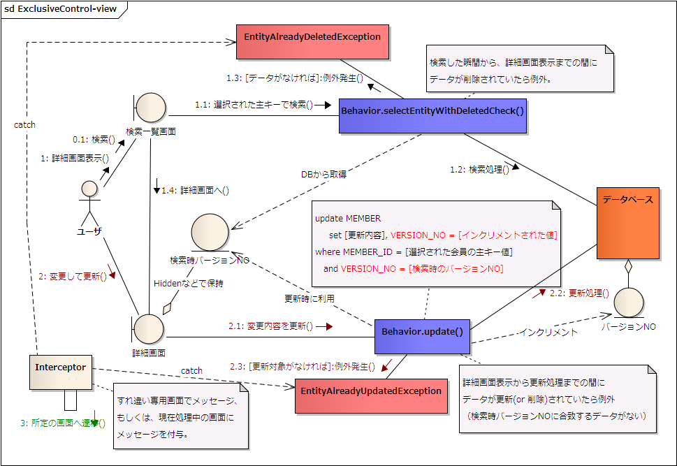

排他制御(楽観的並行性制御)
排他制御とは？
すれ違い更新を防ぐための処理で、DBFluteには、その中の方式の一つである楽観的並行性制御(OptimistickLock)を自動化するための支援機能が備わっています。 よって、DBFluteにおいて、排他制御と言う場合は、ほとんどの場合において楽観的並行性制御のことを示します。
まずは、更新時の排他制御、そして、バージョン番号を使った方式 をメインに説明を進めていきます。その後で、それ以外のポイント(更新日時を使った方式、検索時の排他制御など)を説明します。
排他制御の概念図
図 : 排他制御の概念図 
{kind=link}
排他制御メソッド
DBFluteでは、排他制御対象(排他制御カラムを持っている)テーブル の Behavior では、(もともと存在する) update() の処理に排他制御が追加 され、新たに排他制御なしの updateNonstrict() が生成されます。(delete()、insertOrUpdate()、batchUpdate() などに関しても同様)
排他制御あり
- update()
- delete()
- insertOrUpdate()
- batchUpdate()
- batchDelete()
where句に、指定された(Entityにsetされた)バージョン番号による等値条件が入り、すれ違いが発生した(更新・削除結果が 0 件の)場合は、排他制御用例外である EntityAlreadyUpdatedException が発生します。 また、更新処理の場合は、排他制御カラムは Entityに設定されているにプログラム上でインクリメント(+1)された値で更新 されます。更新後のEntityには、(インクリメントされた)その値が格納されています。
e.g. バージョン番号を利用したupdate()のSQL {MEMBER} @log4j.properties
update MEMBER set MEMBER_NAME = ..., VERSION_NO = 1
where MEMBER_ID = 3 and VERSION_NO = 0
排他制御なし
- updateNonstrict()
- deleteNonstrict()
- deleteNonstrictIgnoreDeleted()
- insertOrUpdateNonstrict()
- batchUpdateNonstrict()
- batchDeleteNonstrict()
特に、where句にバージョン番号による等値条件は入らずに処理されます。更新処理の場合は、排他制御カラムは DB上の値にSQL上でインクリメント(+1)された値で更新 されます。ゆえに、アプリでEntityにバージョン番号を明示的にsetする必要はありません(setしてもそれは無視されます)。 更新後のEntityには、(インクリメントされた)その値は格納されません。
e.g. バージョン番号を利用したupdateNonstrict()のSQL {MEMBER} @log4j.properties
update MEMBER set MEMBER_NAME = ..., VERSION_NO = VERSION_NO + 1
where MEMBER_ID = 3
バージョン番号
バージョン番号は、DBFluteにおいて最も推奨される楽観的並行性制御の実現方法です。 排他制御カラムと言った場合は、このバージョン番号を示すことが多いです。
もし、バージョン番号カラムの名前が、VERSION_NO の場合は、DBFluteで自動でそのカラムを排他制御用のカラムとして認識するため設定は不要です。 (バージョン番号カラムが定義されているテーブルの Behavior の排他制御が有効になります)
それ以外の名前の場合は、littleAdjustmentMap.dfprop の optimisticLockMap の versionNoFieldName にて明示的に設定をします。 (@since 1.1.0 (Java8版), 以前は optimisticLockDefinitionMap.dfprop でした)
ExampleDB では、このバージョン番号を利用しています。ほとんどの Example で試されています。
更新日時
更新日時は、バージョン番号がどうしても設定できない環境の場合に利用することを想定した楽観的並行性制御の実現方法です。 排他制御の厳密さは、DBMSのミリ秒の精度に依存するため、利用するデータ型の精度に注意する必要があります。
利用する場合は、更新日時カラムの名前を optimisticLockDefinitionMap.dfprop の updateDateFieldName にて明示的に設定をします。
dbflute-multipledb-seasar-example にて、Example があります。
検索時の排他制御
検索時の排他制御は、主に selectEntityWithDeletedCheck() が対応します。 例えば、検索一覧画面である条件で検索して、あるレコードを選択して詳細画面へ遷移する直前で、 そのレコードが別の人によって削除、もしくは、(詳細画面では扱えなくなる)削除に等しい更新がされた場合に、詳細画面の表示ロジックの中で selectEntityWithDeletedCheck() を利用していれば、EntityAlreadyDeletedException が発生します。これが検索時の排他制御の例外となります。(そのようにアプリの実装として統一されていることが前提です)
このようなケースが業務的にあり得るのか、はたまた、そもそもアプリとしてそこまで考慮する(要件がある)のか、グレーゾーンになりがちですので、 この例外をどのように扱うかはアプリの状況に合わせて検討する必要があります。
SchemaHTMLでの表示
Docタスクで自動生成される SchemaHTML では、排他制御カラムは他のカラムとは見た目の表現が少し違い、区別が付くようになっています。
Exampleのススメ
dbflute-basic-example では、テストケースの中で実際にバージョン番号を利用した排他制御を利用しています。 (他の多くのExampleでも同様に利用されています)
また、dbflute-multipledb-seasar-example では、更新日時を利用した排他制御を利用しています(LibraryDBの方)。